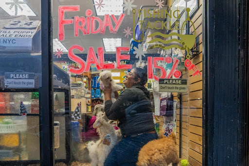
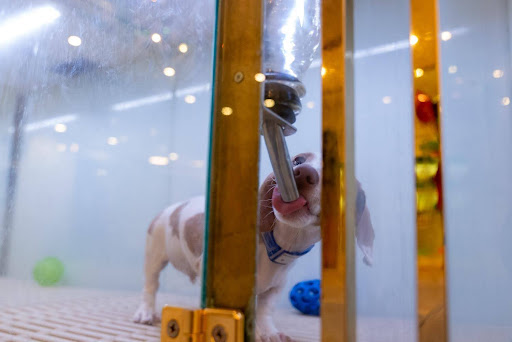

December 13, 2024
Caption: Laura Vernelly hoped to buy a puppy from the store where she works.
Credit: Allison Hunter
Laura Vernelly climbed into the pet enclosure to play with the puppies at Best Friend Pet Shop located on the border of Washington Heights and Inwood. As store manager, Vernelly had hoped to buy one in the future. That was before she heard about the new state law banning retail puppy sales.
The law passed by the New York State Legislature in 2022 will end sales of dogs, cats, and rabbits at stores on December 15th. Governor Kathy Hochul said in a statement the bill aims “to end the puppy mill-to-pet store pipeline and stop abusive breeders. … [It] will also allow pet stores to charge shelters rent to use their space for adoptions.”
There are currently five stores in Manhattan that sell puppies, including Best Friend Pet Shop. Two of them also sell supplies and provide grooming services. Those more diversified shops hope they can survive this bill. The other three stores may have to close.
Best Friend Pet Shop, owned by Carmentel Pimentel, plans to sell other types of pets not prohibited by the bill, including Bearded Dragon lizards, fish, hamsters and more varieties of birds. They already displays one small cage of white, green, and blue parakeets above a puppy enclosure in their front window.
Although the bill also included a way for pet stores to rent spce to rescue groups for adoption events, store owners claim it's not an easy pivot.
Best Friend manager Vernelly said their store will not be offering adoptions because shelter dogs “need more space. They're bigger dogs, they're not puppies.”
The three-year-old shop only began selling puppies two years ago after customers asked for small breeds such as Shih Tzus, Bichon Frisés, Yorkshire terriers, Maltese and toy poodles.
Vernelly says they get their dogs from Class A breeders, a designation that means the breeder raises the dogs they sell. Vernelly said their dogs come “with paperwork, affidavit, USDA paperwork. The USDA checks the breeder. “If they're [from] puppy mills, we can't sell them.”The store does well with sales of premium pet food because nearby groceries don’t offer it, according to Vernelly. Online food vendors don’t compete with the fresh food Best Friend sells either. She said customers come in weekly to buy food, and monthly for pet grooming.
Puppy customers then became grooming clients. The store grooms between 12 and 24 dogs daily.
Vernelly said another factor in their favor is the community the store provides.
“They like to shop here. We bring them happiness, joy.”
Like Best Friend Pet Shop, Pet Fashion & Grooming on 181st St. in Washington Heights also began selling pups 13 years ago because of customer demand.
Manager Carlos Parra said the puppies attract customers, but what really brings in the money is grooming. They, too, won’t be hosting adoptions. Parra feels the store will survive.
Further downtown, some stores that only sell puppies are shutting down. These types of stores make most of their income from puppy and kitten sales.
Citipups in Chelsea, which also has an Upper East Side location, will have to lay off about 35 employees, according to store spokesman Emilio Ortiz. Ortiz, who has worked at the Chelsea store for 13 years, said Citipups procures about 50 pups a week. Prices range from $700 to $3,000. The older the dog, the lower the cost. Ortiz said breeds like Shih Tzus, Yorkshire terriers and Pomeranians tended to sell out within four to 12 days.
Across the state, some stores are fighting to block the legislation. The law office of Creedon & Gill of Northport, Long Island, is leading the charge.
Ortiz said he believes the breeders they bought from are reputable; he visits them in person, and documents their facilities on camera for Instagram and TikTok.
“I’ve got hours and hours of videos of all my travels around the country visiting the breeders, and we give [out] the name and address and all that stuff,” said Ortiz.Lawyer Jonathan Gill, a partner in the law firm, said they filed a lawsuit on behalf of four pet stores and one individual to stop the law from being implemented.
Gill said his clients made “80 to 95% of their gross revenue” from puppy sales. Their lawsuit claimed the state violated the stores’ constitutional rights by unfairly prohibiting their businesses from operating citing the 14th Amendment Due Process Clause.
“If this law goes into effect, they’re done,” said Gill. “It's going to really negatively impact the economy.”
Assembly Member Jodi Giglio of Long Island said she also fears the upcoming ban will “devastate the local economy and result in significant job losses without a solution to the problem of ‘puppy mills.’” Giglio originally voted in favor of the legislation. In a statement, she said it seemed like a win but after taking a closer look at the consequences of the ban, it “risks doing more harm than good—especially when it comes to small businesses and, ironically, the very problem it aims to solve: puppy mills.”
Proponents of the law maintain it’s an important step in shutting down businesses that benefit from animal cruelty.
“These puppy mills are breeding these animals so that they can sell them to the pet stores,” said Melissa Treuman, spokesperson for the non-profit animal shelter and welfare organization. “The [the upcoming ban] is going to affect the puppy mill quote unquote industry, which is what we want.”
Caption: Puppies arrive at 9 weeks old. They are displayed in air-controlled crates at Citipups on Lexington Ave.
Credit: Allison Hunter
At Bideawee, Treuman said, they understand the desire for smaller dogs – and the demand that led stores like Best Friend Pet Shop to start carrying puppies in the first place.
“People in Manhattan have smaller apartments,” but she said, “there's plenty of small dogs out there that are in need of homes that are in shelters.”